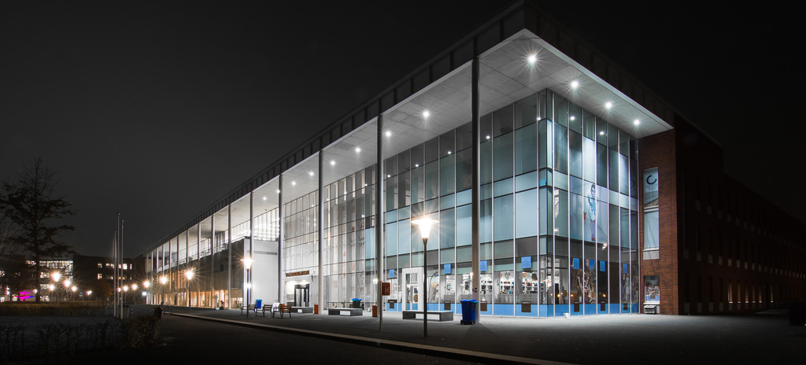

About the Hanze University of Applied Sciences

Hanze University of Applied Sciences, Groningen is the largest technical & vocational university in the northern Netherlands and is located in Groningen.
Hanze UAS offers various Bachelor and Master programmes in Dutch, English, and German, and works closely with international partner institutes.
The school counts approximately 25,000 students and 2,700 employees.